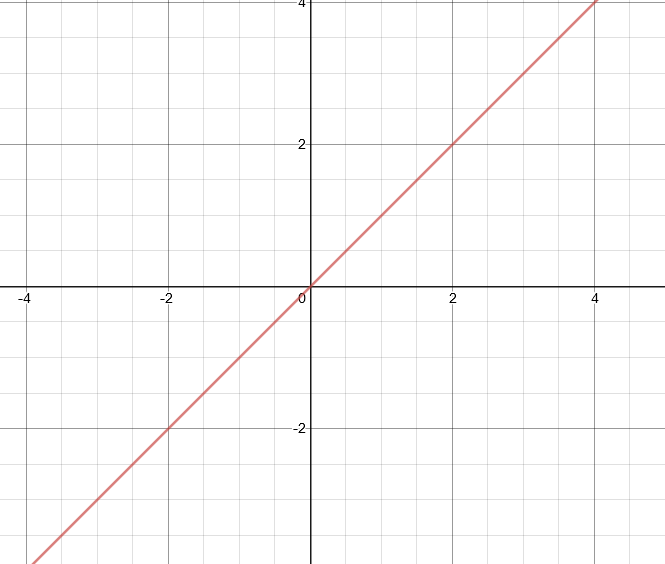
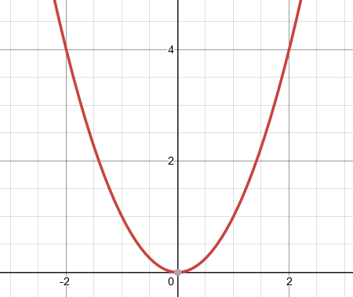
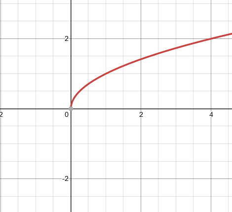
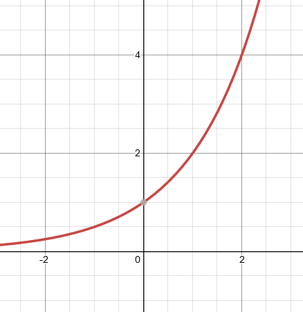
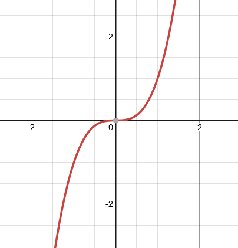
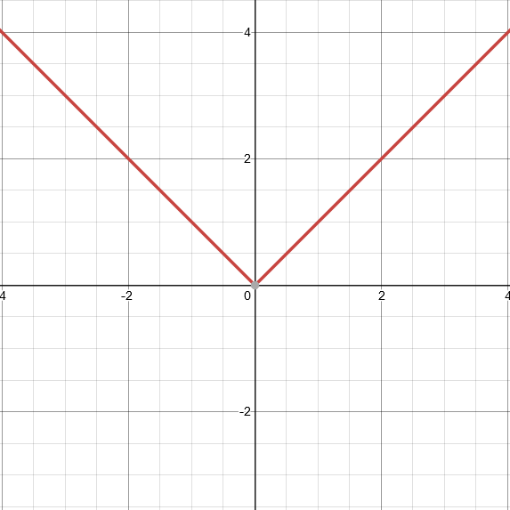
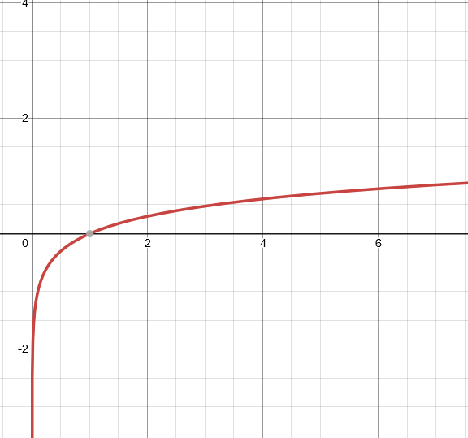
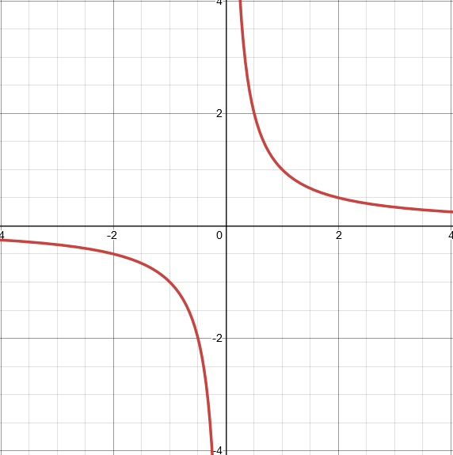

1.1 What is a Function?¶
1.1.1 Definitions of Functions¶
- Function
Relationship where each input, "x", has a single output, "y". Written as "f(x)=…"
1.1.2 Identifying Functions and Non-Functions¶
- Functions may be represented as:
{kind=link}
{kind=link}
Note
Non-Functions do not pass the vertical line test, where one input has more than one output.
1.1.3 Function Notation¶
- How to:
Simply replace the "y" from any equation with "f(x)"
- Example:
\(y = x\) becomes \(f(x) = x\)
\(y = mx + b\) becomes \(f(x) = mx + b\)
1.1.4 Set Notation¶
- Definition:
Set notation is used to define the elements that are part of a set (list).
- Writing Set Notation:
Formula: {x ∈ <Set of Numbers> | <Condition> }
Read as: "x is an element of <set of numbers> such that <condition>”
Symbols you might encounter:
Symbol |
Symbol Name |
Meaning/Definition |
|---|---|---|
A | B |
Such That |
A "such that" condition B |
A ⋂ B |
Intersection |
Belongs to both Set A and B |
A ⋃ B |
Union |
Belongs to Set A or Set B |
A ⊂ B |
Subset |
A is a subset of B |
A ⊄ B |
Not a subset |
A is not a subset of B |
A ∈ B |
Element |
A belongs to B |
A ∉ B |
Not an element |
A is not an element of B |
Ø |
Empty Set |
Set is empty |
Types of Numbers
Symbol |
Symbol Name |
Meaning/Definition |
|---|---|---|
ℤ |
Set of integers |
All positive and negative numbers |
ℝ |
Set of Real Numbers |
All numbers, excluding imaginary numbers |
ℕ |
Set of Natural Numbers |
Positive whole numbers |
ℚ |
Set of Rational Numbers |
Numbers that can be written as fractions |
ℂ |
Set of Complex Numbers |
Numbers that can be represented in the form \(a + bi\) |
1.1.5 Parent Functions¶
Name |
Equation |
Graph |
|---|---|---|
Linear |
\(y = x\) |
 |
Quadratic |
\(y = x^2\) |
 |
Square Root |
\(y = \sqrt{x}\) |
 |
Exponential |
\(y = b^x\) |
 |
Cubic |
\(y = x^3\) |
 |
Absolute Value |
\(y = | x |\) |
 |
Logarithmic |
\(y = \log x\) |
 |
Rational |
\(y = \frac{1}{x}\) |
 |